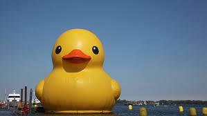

Duck Stuff: Fun Facts About Duck

- Ducks have hydrophobic feathers. Meaning when in contact with water, it beads up and basically rolls off them.
- Ducks are omnivorous and will eat things from grass and other plants, to insects.
- Ducklings younger than 10 days tend to swim and walk as a group, always close to their mother, to avoid the attack of predators.
- Ducks are outgoing, social animals who feel most at ease when they're in a larger group of other ducks.
- Ducks are birds. Ducks are also called ‘waterfowl’ because they are normally found in places where there is water like ponds, streams, and rivers.
- Ducks can live up to 20 years, depending on the species and if well cared for.
- The production of eggs is affected by daylight. When there is more daylight, the ducks will lay more eggs. To prevent this from happening, farmers use artificial lighting so that the ducks have about 17 hours of light a day to produce eggs efficiently.
- Ducks have been domesticated as pets and farm animals for more than 500 years, and all domestic ducks are descended from either the mallard or the Muscovy duck. Mallards, especially, are easy to crossbreed with other types of ducks, and mallards often hybridize with all types of ducks at local ponds.
- The eggs will hatch within 28 days normally, except for the Muscovy duck which takes about 35 days to hatch. The mother duck will keep her brood of ducklings together to protect them from predators.
- Most duck species are monogamous for a breeding season but they do not often mate for life. Instead, they will seek out new mates each year, choosing the healthiest, strongest, best mate who can help them pass on their genes to a new duckling generation.